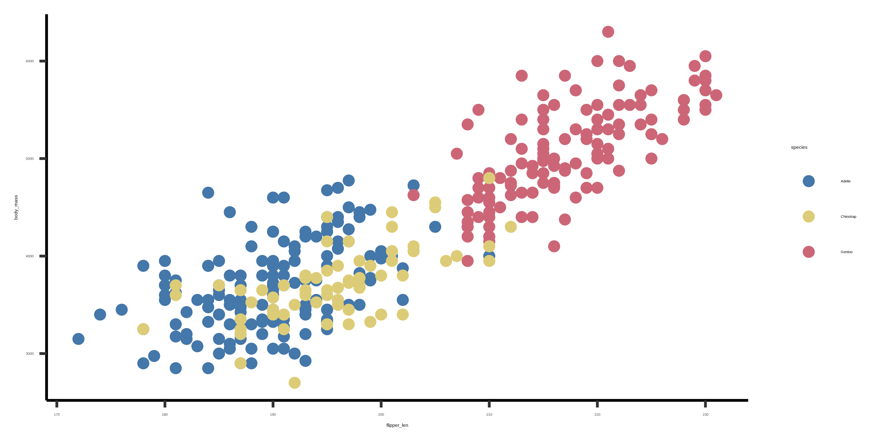

1 本附录改编自 Mike Frank 和 Chris Hartgerink 在 SIPS 2017 一起讲授的教程。
2 Quarto 的前身是 R Markdown。Quarto 的工作方式和 R Markdown 很相似，但功能扩展了很多，尤其是它并不局限于 R，也可以和 Python、Javascript、Julia 一起使用。本教程围绕 Quarto 展开，但其中很多内容也适用于 R Markdown，只需要对语法做相对小的修改。
简短地说：Quarto 让你创建可以和代码一起编译的文档，从而生成你的下一篇科学论文。2 这个教程会帮助你掌握完成这件事所需要的基本细节。本附录，实际上整本书，都是用 Quarto 写的。它是一个非常灵活的平台，可以用来写出漂亮的文档。3
C.1 开始使用
打开 Rstudio，新建一个 Quarto 文档（File > New File > Quarto Document）。现在先不用担心各种设置，我们后面会讲。
如果你点击 “Render” 按钮（或者在 Mac 上按 Cmd+Shift+K，在 Windows 上按 Ctrl+Shift+K），就会生成一个包含正文和嵌入代码输出的文档，结果是一个可以在浏览器中打开的 HTML 文件。如果 RStudio 要求你安装 packages，就点 yes，先看看一切是否能正常运行。
在继续讲更多 Quarto 内容之前，我们需要先确认这一步能跑通。但如果你已经到了这里，应该可以稍微安心一点，因为说实话，你已经完成了写基础 Quarto 文档所需工作的 80% 左右。它就是这么容易。
注记exercises
把 Quarto 模板 render 成 PDF（把 format: html 改成 format: pdf）和 Word（format: docx），确认这些格式都能正常生成。是不是挺有成就感？ 所有可用输出格式的完整列表可以在这里看到。
C.2 Quarto 文件的结构
一个 Quarto 文件包含几个部分。最核心的是 header、body text 和 code chunks。当你 render 生成的文档时，会得到输出，也就是正文和代码运行结果合并在一起的文档，格式可以是多种输出格式之一。
C.2.1 Header（文件头）
Quarto 文件的 header 包含一些关于文档的 metadata，你可以按自己的需要自定义。下面是一个简单例子，只声明了 title、author name(s)、date 和 output format。4
通过一个叫 pandoc 的程序，Quarto 也可以 render 成 Microsoft Word 的 docx 格式。这个功能在和合作者共享可编辑的写作草稿时很有用（见下文）。
最后，render 成 PDF 对于创建投稿 manuscript 或其他需要特定静态格式的研究输出很有用。 如果你想从 Quarto 创建 PDF，你需要在电脑上安装 。（，简称 tex，是一个强大的排版系统。）可用的 tex 安装有很多。一个较新的选择是 TinyTEX，这是一个为 R 用户制作的最小化 tex 安装。如果你想完整安装，可以在 Windows 上试试 MikTeX，在 Mac 上试试 MacTeX，或者在 Linux 上试试 TeX Live。
C.3 Markdown syntax（Markdown 语法）
Markdown 是最简单的文档语言之一。它是一个 open standard，可以转换成 .tex、.docx、.html、.pdf 等格式。这是 Quarto 的主要工作语言，而且非常强大。你可以五分钟学会 Markdown。其他资源包括这个教程，以及在 RStudio 中进入 Help > Markdown Quick Reference 后弹出的帮助页面。
```{r}#| fig-cap: "Body mass (g) vs. flipper length (mm) for three species of penguins."#| label: fig-penguins#| fig-width: 6#| fig-height: 3ggplot(penguins, aes(x = flipper_len, y = body_mass, colour = species)) +geom_point()```

图 C.1: Body mass (g) vs. flipper length (mm) for three species of penguins.
手工管理 bibliography 是很大的工作量。让软件帮你做这件事要容易得多。在 Quarto 中，可以用 @ref 语法通过 bibtex 引用文献。
做法很简单。你在一个 bibtex 文件中整理一组 paper citations；然后当你在正文中引用它们时，citations 会以正确格式出现，并且也会被放入 bibliography。例如，@nuijten2016 会生成正文引用 “Nuijten 等 (2016)”，或者也可以用 [@nuijten2016](Nuijten 等 2016) 进行括号引用。更多 citation options 可以看 Quarto docs。
怎样创建你的 bibtex 文件？你可以手工写，但这很麻烦。管理 references 的一种选择是 bibdesk，它可以和 google scholar 集成。6citr 是一个 R package，它提供了一个易用的 RStudio addin，方便插入 citations。 这个 addin 会自动查找 YAML front matter 中指定的 Bib(La)TeX-file(s)。 插入 citations 对应的 references 会自动添加到文档的 reference section 中。安装 citr（install.packages("citr")）并重启 R session 后，这个 addin 会出现在菜单中，你也可以定义一个 keyboard shortcut 来调用它。
6 还有很多其他选择。例如，我们中有些人也经常使用 Zotero。
C.8 Collaboration（协作）
我们如何用 Quarto 协作？人们会使用很多不同的 workflows。下面是几种：
Lead author 创建一个包含 Quarto 文档的 Git repository。其他人阅读 render 后的 PDF，并发送文字评论或 PDF annotations，然后 lead 根据这些评论修改源文件。7 当 lead author 比较有经验，并且想在不进行太多逐行重写的情况下控制 manuscript 时，这个 workflow 很适合。
Lead author 从 Quarto render results section，然后在生成的 Word 文档中写正文（或上传到 Google Docs）。这个 workflow 最接近许多人熟悉的“老办法”，但引入并向后传播错误的风险最大，因为不可能从头重新 render 整个文档。如果有人修改 results section，必须把这些修改同步回源文件，并保持两边一致。
7 Dropbox 有很好用的 PDF annotation tools，可以在特定文本行上写评论。
Quarto 是写可重复论文的好工具。它不太难学，一旦掌握之后，你可以通过快速自动地重新格式化、自动管理 bibliography，甚至创建漂亮的 web-compatible documents 来节省时间。
Nuijten, Michèle B., Chris H J Hartgerink, Marcel A L M van Assen, Sacha Epskamp, 和 Jelte M Wicherts. 2016. 《The prevalence of statistical reporting errors in psychology (1985–2013)》. Behavior Research Methods 48 (4): 1205–26.